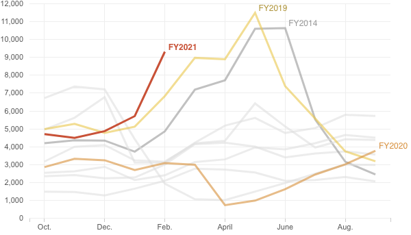

<%= await t.include("lib/_head.html") %>
<% if (COPY.labels.headline_uac_custody) { %>
<%= t.smarty(COPY.labels.headline_uac_custody) %>
<% } %>
<% if (COPY.labels.subhed_uac_custody) { %>
<%= t.smarty(COPY.labels.subhed_uac_custody) %>
<% } %>
aria-label="<%- COPY.labels.screenreader %>"
<% } %>
>

<% if (COPY.labels.footnote) { %>
<% } %>
<%= await t.include("lib/_foot.html") %>